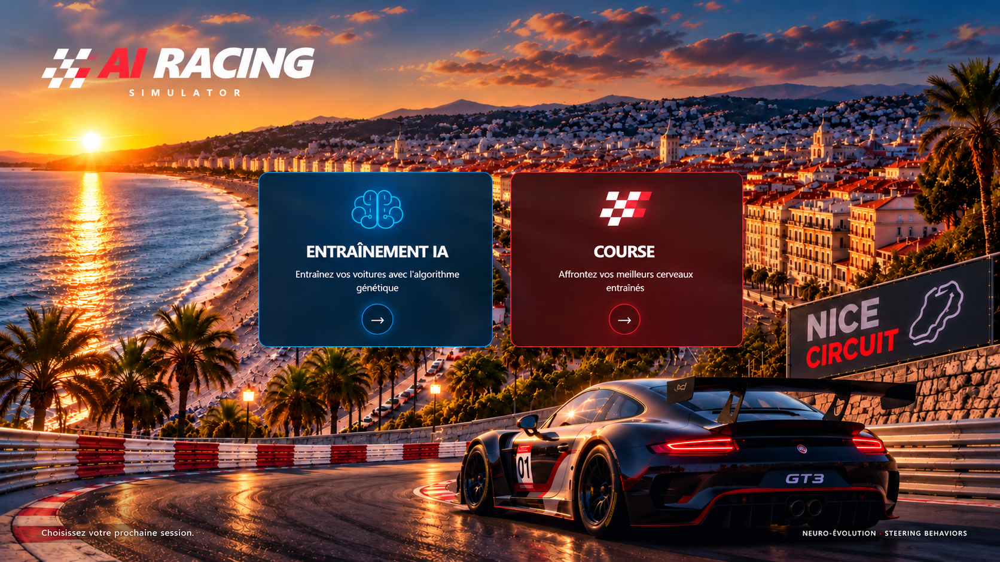

AI Racing Simulator — Nice Circuit

Initialisation du simulateur…
AI
RACING
EVOLUTION SIMULATOR
Mode
Training · neuro-évolution
Race · cerveaux entraînés
En pause
⌂ Accueil
ENTRAÎNEMENT · ALGORITHME GÉNÉTIQUE
Zoom
×1.0
Vue globale
Suivre la sélection
Glisser pour déplacer · molette pour zoomer
Circuit
Facile · large
Moyen · original
Difficile · étroit
Checkpoints
Capteurs
D